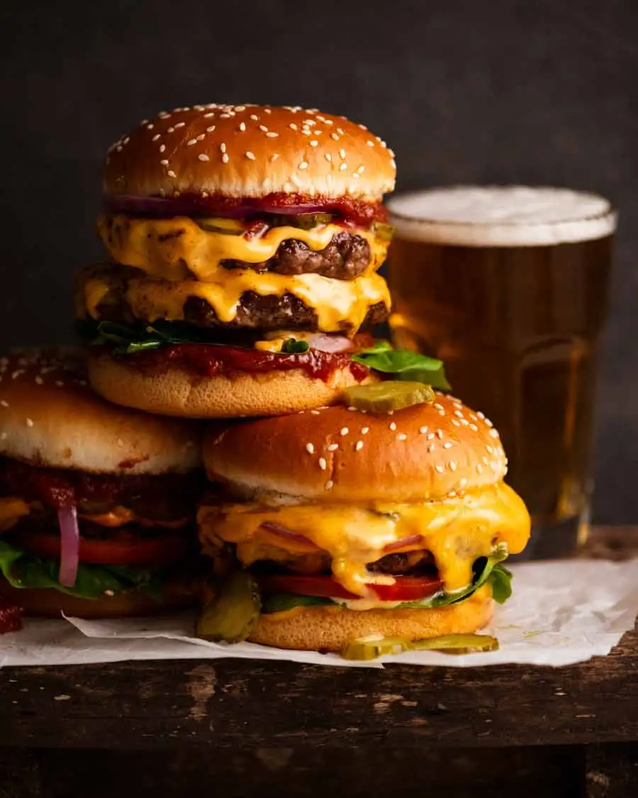

Anybody who claims the sight of a big juicy cheeseburger doesn’t get their blood pumping is either made of stone or a vegetarian!
I know you know how to make a cheeseburger … but as it turns out, I have some tips you might find useful! From the best beef to the best bun to the best cheese, today’s burger recipe also comes with your choice of burger sauces: a tomato one or my quick creamy Special Burger Sauce. Plus, homemade fries!